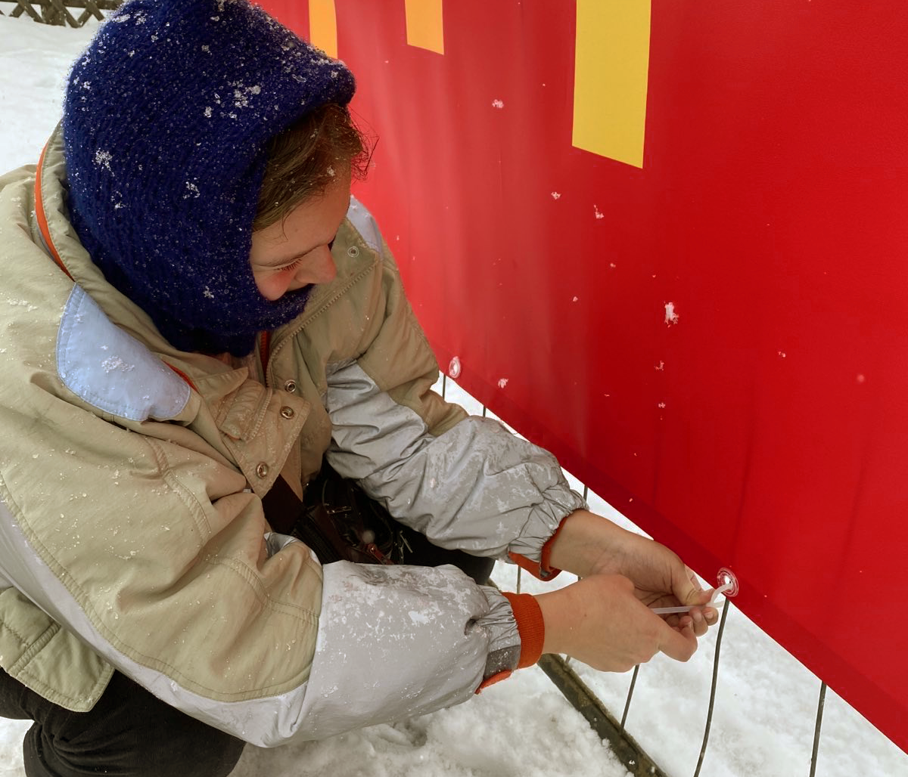
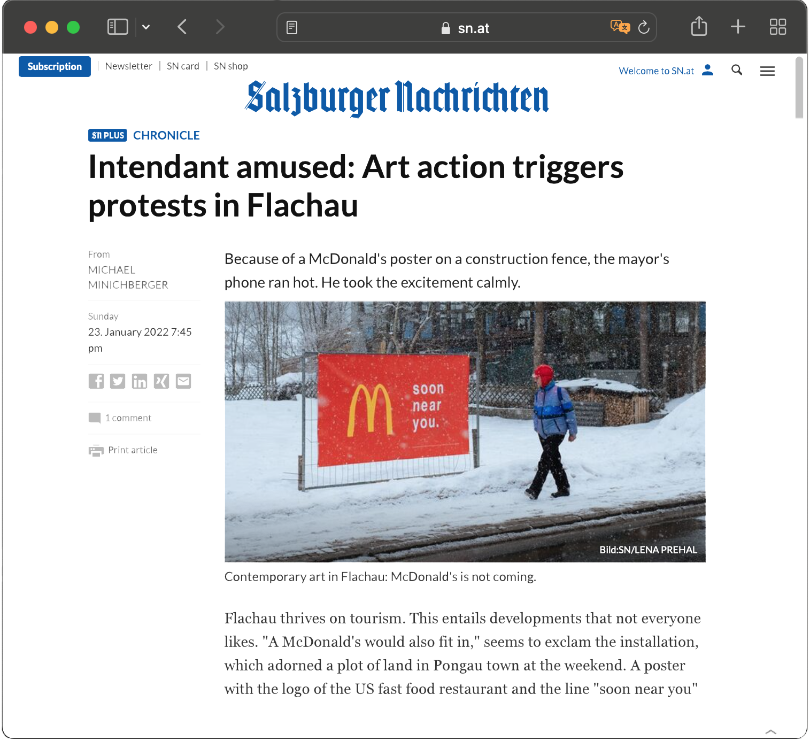

soon near you
intervention,
flachau 2022.

"If Flachau is a tourist town, especially at this time of the year, and if most people are only here temporarily, then soon there will be a McDonald's near us.""
The minus20degree festival "interprets the existing winter landscape as a laboratory for all expressions of art". And the Social Design department at the University of Applied Arts Vienna, which I’m part of, was invited to participate.
We were asked to create interventions that would somehow raise questions about Flachau's development and snow tourism environmental and social effects, (Flachau has about 2900 habitants, in 2019 had over 1.3 million overnight stays, mostly for winter sports tourism).
My idea was to, instead of criticizing the current situation, suggest one small change in the near future and see how the locals and tourists would look at it. And I thought the Mcdonald's logo, with all the environmental and ethical weight it brings, would get some reactions.
The sign with the chosen sentence, "soon near us", was placed in an empty area in the main street and was meant to be interpreted not only as an announcement of a new (fictitious) construction, but also as a reminder that most of us are only there temporarily. Could even be seen as a warning.
The banner got some reactions and generated some opinions, as intended. Mayor Thomas Oberreiter himself commented on the hypothesis raised by the project, in an article dedicated to it, in the newspaper Salzburg Nachrichten, printed on January 24, 2022 and online.
 